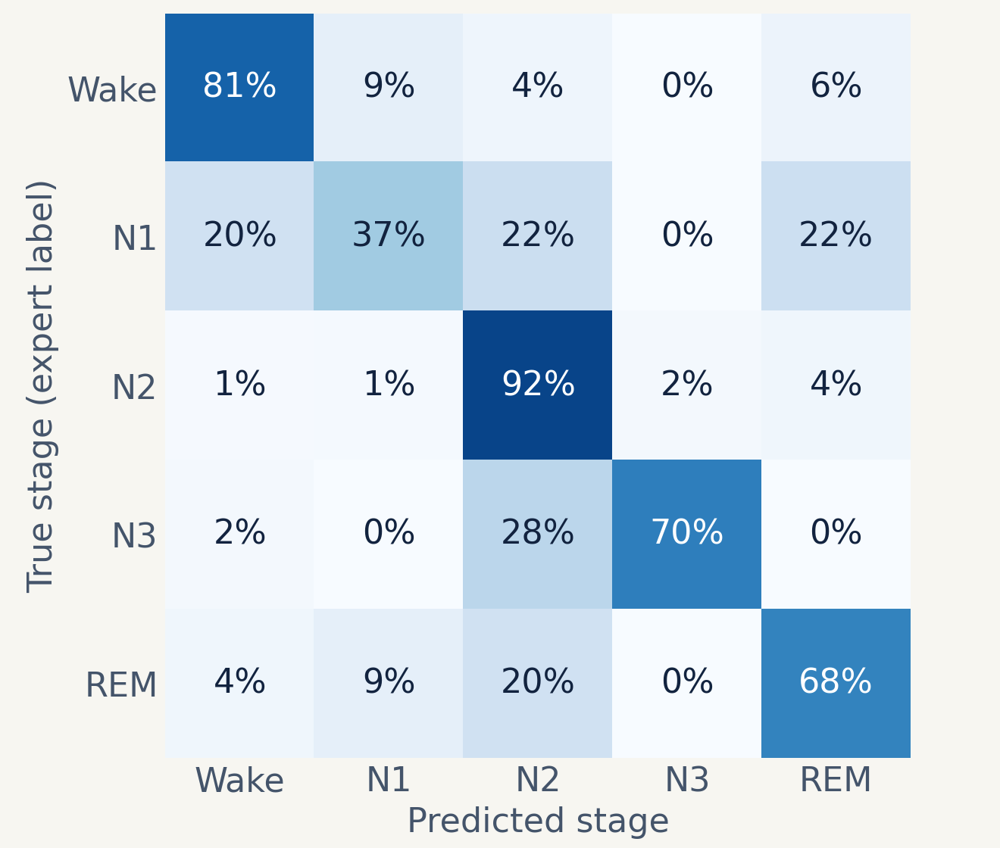
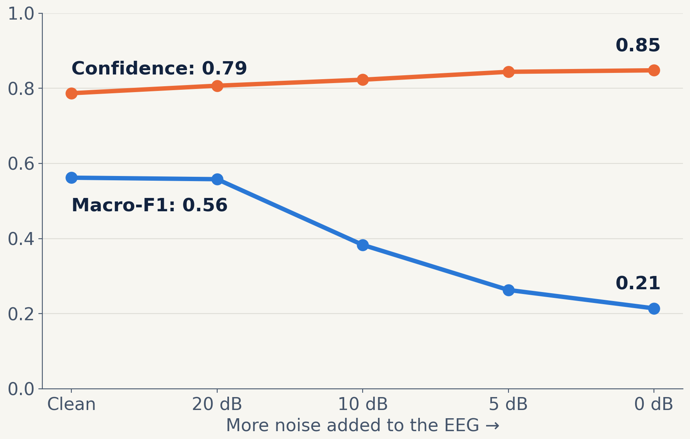
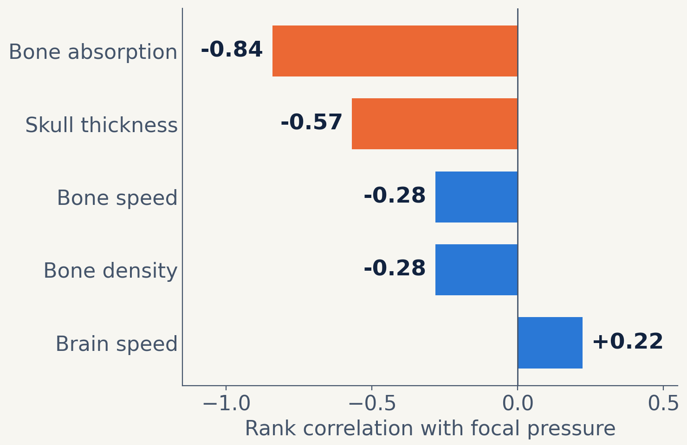

Testing the reliability of EEG sleep tracking and focused-ultrasound simulation for future sleep and anxiety research
Nyas Braintech
[Student names] · Mentor: [Mentor name] · Team [number]
Software-only research. No ultrasound was given to any person or animal.
Problem
Promising brain tools can be wrong and still look convincing
The need
Sleep problems and anxiety affect daily life, health and learning.
[Local statistic and source: sleep or anxiety in our community]
The opportunity
Researchers are studying low-intensity focused ultrasound (LIFU), a non-invasive way to target brain regions, and EEG can track sleep.
The gap
A sleep model can report high confidence when it is wrong. A simulation can give a precise number that depends on uncertain assumptions.
Who this affects
Researchers benefit first; communities could benefit later
Now
Researchers
See when a model or simulation should not be trusted.
→
Next
Future studies
Could be better designed before anyone is exposed to ultrasound.
→
Possibly, much later
People and families
Could gain from better evidence, if future research succeeds.
[Our community: who we focused on, and what we heard from a researcher, clinician or community member]
Background: EEG and sleep
EEG shows electrical patterns that change across sleep
Wake
Faster activity; alpha waves with eyes closed
N1
Brief, light transition into sleep; theta waves
N2
Sleep spindles and K-complexes
N3
Deep sleep; large, slow delta waves
REM
Dreaming stage; EEG can look like light sleep
Why it is hard
Stages blend into each other, N1 is short and rare, and brain signals differ from person to person.
Our data
Public Sleep-EDF recordings, with each 30-second epoch labelled by a human scorer.
Sources: Kemp et al., 2000; Goldberger et al., 2000; AASM scoring manual (Berry et al.)
Background: focused ultrasound
The skull makes it hard to know what reaches the target
What LIFU is
Low-intensity sound waves focused on a small brain region from outside the head. It is still being studied.
The challenge
The skull reflects, absorbs and bends sound, and its properties vary. Published guidance describes skull absorption as considerably uncertain.
Why simulate
Simulation lets us test “what if” questions with no exposure to anyone, but its answers must be checked.
Our simulated setup
500 kHz focused source through skin, a 3-layer skull and brain
Tissue values and layers follow a published transcranial simulation benchmark, built here in 2D.
Sources: ITRUSST practical guide (arXiv 2407.07646); Angla et al. (arXiv 2207.12026); Aubry et al., 2022
Hypothesis
A framework that measures uncertainty will reveal when EEG sleep models and ultrasound simulations become unreliable, and which factors matter most, better than headline accuracy alone.
Methods
Two tracks, one reliability question
EEG track
Sleep-EDF: 1 EEG channel
→
10 frequency-band features
→
Random forest vs simple baselines
→
Confidence and noise tests
Acoustic track
2D layered virtual head
→
k-Wave beam simulation
→
Checks against exact solutions
→
Varying tissue properties
Fair testing: each person held out in turn, then a frozen model tested once on 3 new people
Joining the tracks: a software-only test of how often a hypothetical trigger would be mistimed
Tools: Python, scikit-learn, k-Wave (Treeby and Cox, 2010). Software only.
Results: blind test on 3 new people
It held up, but accuracy alone misleads

Blind test
Accuracy
Macro-F1
Our random forest
79.8%
0.61
Logistic regression
75.5%
0.60
Always guess Wake
75.7%
0.17
Wake vs sleep is much easier: about 92% accuracy near sleep, using a cut-off taken from development data.
N1 is the weak spot: only 37% of N1 epochs were identified.
5 development and 3 blind participants, same dataset. Cross-validation: 76.5% accuracy, macro-F1 0.55.
Results: when confidence fails
With noisier EEG, the model grew more confident and less capable

0.86 → 0.66
Its ability to flag its own errors (AUC), from clean EEG to 0 dB
A confident answer is not always a good answer.
Check signal quality before trusting the model.
Random forest, leave-one-person-out on 5 participants, mean of 3 noise seeds. White noise is a simplified stress test.
Results: what reaches the target
About a third of the focal pressure remains
In water: focal pressure 1.00
Through skin, skull and brain: 0.34
Treating the skull as one solid layer overestimates focal pressure by about 50% (0.51 vs 0.34).
Absorption matters: without it, the 3-layer model gives 0.54.
2D simulation, uncalibrated, 500 kHz. Pressure is relative to the same source in water. Not a safety or dose value.
Results: uncertainty and checks
Skull absorption and thickness matter most

0.22–0.52
Estimated range of focal pressure relative to water (5–95%), across assumed tissue ranges
How we checked our code
Layer transmission: within 0.5% of the exact solution
2D focus: matched the analytic field
Those checks caught a real bug in our code
19 of 32 samples finished. Unfinished samples had more absorption, so the range uses a fit to all 32 inputs (raw: 0.25–0.58).
Results: bringing EEG and LIFU together in software
Would a sleep-triggered system fire at the right time?
Hypothetical trigger rule (blind test)
Precision
Recall
Fired in Wake
N2, no filter
0.65
0.92
19.1%
N2, confidence ≥ 0.7 and 3 epochs in a row
0.94
0.55
0.2%
N3, no filter
0.87
0.70
6.9%
Filters help, at a cost
Better timing means missing more of the target stage.
People differ
N3 precision was only 0.27 in our 5 development participants.
Noise removes triggers
N2 recall fell from 0.82 to 0.22 at 5 dB (development data).
Simulated timing only. N2 and N3 are examples; this work does not support targeting any sleep stage. Nothing was delivered to anyone.
Our solution and its impact
A reliability-testing framework that shows when to trust these tools, before any human use
What is new
It tests classifier confidence and acoustic uncertainty together, including how often timing would go wrong.
Positive impact
Helps researchers find weak points earlier, with no exposure to ultrasound. It uses software and public data, so it can scale at low cost.
Risks we must manage
Simulated numbers could be misread as safe doses, and small datasets may not represent everyone.
It runs on existing technology today. Any clinical use would need far more validation, plus safety and ethics review.
Limits and next steps
What we know, and what we still need to test
Limits
8 people from one dataset
2D head model, uncalibrated pressures
Finest grid and 3D benchmark not finished
Not experimentally or clinically validated
Next steps
Test about 20 more participants
Add signal-quality screening and real artefacts
Finish the published benchmark comparison
Vary skull shape and add community input
Before we ask whether a tool can help people, we need to know when it can’t be trusted.
References
Aubry J-F, et al. Benchmark problems for transcranial ultrasound simulation: intercomparison of compressional wave models. J Acoust Soc Am. 2022;152(2):1003–1019.
Kemp B, et al. Analysis of a sleep-dependent neuronal feedback loop: the slow-wave microcontinuity of the EEG. IEEE Trans Biomed Eng. 2000;47(9):1185–1194.
Goldberger AL, et al. PhysioBank, PhysioToolkit, and PhysioNet. Circulation. 2000;101(23):e215–e220.
Treeby BE, Cox BT. k-Wave: MATLAB toolbox for the simulation and reconstruction of photoacoustic wave fields. J Biomed Opt. 2010;15(2):021314.
ITRUSST Consortium. A practical guide to transcranial ultrasonic stimulation. arXiv:2407.07646.
Angla C, et al. Transcranial ultrasound simulations: a review. arXiv:2207.12026.
Berry RB, et al. The AASM Manual for the Scoring of Sleep and Associated Events. American Academy of Sleep Medicine.